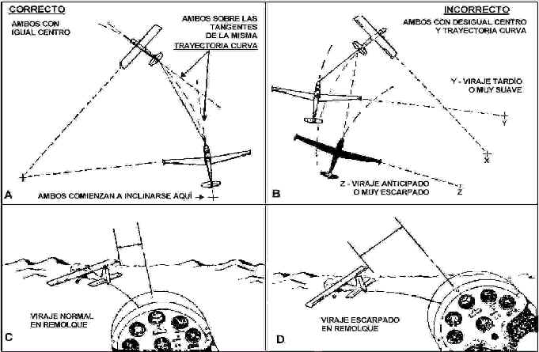

CURSO TEÓRICO
DE
PILOTO DE PLANEADOR
[ Arriba ] [ 1ª Sección ] [ 2ª Sección ] [ 3ª Sección ] [ 4ª Sección ] [ 5ª Sección ] [ 6ª Sección ] [ 7ª Sección ] [ 8ª Sección ] [ 9ª Sección ] [ 10ª Sección ] [ 11ª Sección ] [ 12ª Sección ] [ 13ª Sección ] [ 14ª Sección ] [ 15ª Sección ]
13ª Sección: VIRAJES EN REMOLQUE.
VIRAJES EN REMOLQUE
Se
iniciarán en forma suave y progresiva cuidando que la velocidad se mantenga uniforme
igual que la actitud de vuelo del avión. La bolita del indicador de giros y ladeos
deberá permanecer centrada para evitar deslizamientos o patinadas. Para lograrlo, en
ocasiones será preciso una aplicación amplia del timón de dirección en uno u otro sentido, debido a la componente de tracción ejercida
por la soga de remolque que variará según la posición del planeador.
El remolcador deberá observar continuamente al planeador
para ver si mantiene la trayectoria correcta; en caso contrario, variará el radio de su
viraje para que éste quede ubicado en la posición correcta.
Esta medida se aplicará especialmente con alumnos que
recién salen solos o pilotos con poca experiencia.
La intensidad del viraje estará limitada por diferentes
factores (tipo de planeador y/o avión, habilidad de los pilotos de ambas aeronaves,
etcétera).
Generalmente la máxima inclinación aconsejable será de
hasta 45º. Pasado este valor el vuelo se hará dificultoso por la poca
velocidad del avión y porque el planeador sufre la acción de distintas fuerzas que
actúan sobre él.
Durante la realización de virajes -especialmente si se
trata de un piloto con poca experiencia-, el planeador puede situarse dentro del radio de
éstos, lo que conducirá al aflojamiento de la soga, que al volver a tensarse producirá
fuertes tirones en el avión.
En estos casos el remolcador puede amortiguarlos en las
formas que se expresan:
1º) Si
el planeador estuviera más alto que el avión, éste se limitará a mantener la velocidad
reduciendo suavemente el motor cuando el tirón sea inminente.
2º) Si
el planeador estuviera más bajo que el avión, su piloto accionará en forma rápida aminorando su velocidad de
ascenso, reduciendo el motor poco antes del tirón para evitar que por efectos de éste la aeronave remolcada incremente su
velocidad ocasionando un
nuevo aflojamiento de la soga.
3º) Si
ésta se aflojara en forma exagerada durante el viraje, el remolcador ampliará
momentáneamente su radio de giro para que se estire, debiendo el piloto del planeador
asumir la posición correcta para evitar la repetición del problema.
Para
conservar correctamente su posición, este último visualizará la trayectoria curva del
avión.
Ambas aeronaves deben girar en una circunferencia de igual
diámetro, con el mismo centro para cada una, para lograrlo deberán mantener sus ejes
longitudinales sobre diferentes puntos tangentes del mismo círculo. (Fig. 8 A).
Si el planeador comienza a inclinar en el mismo momento que lo hace el avión, se
colocará en una trayectoria interna respecto al viraje de este último, acortándolo y
acortándolo y sobrepasando al segundo. Si en cambio e1 viraje se inicia demasiado tarde,
la trayectoria del planeador será por e1 exterior de la del avión, lo que producirá un
efecto de “latigazo”. (Fig. Nº 8 B).

Figura Nº 8 – Virajes en remolque
Quienes
pretendan aplicar la experiencia del vuelo en formación iniciando la inclinación al
mismo tiempo que el avión, obtendrán un giro prematuro o de radio menor, lo que
causará el aflojamiento de la soga.
El secreto de la maniobra consiste en inclinar ambas
aeronaves en el mismo punto del espacio, con igual régimen de giro e inclinación.
Con una soga de aproximadamente 75 m. (350 pies), volando
a una velocidad de 96 km/h. (60 millas por hora), el planeador tardará aproximadamente 3
segundos para llegar al punto en el que el avión comenzó a inclinarse. Por lo tanto su piloto esperará que transcurra ese tiempo contando
pausadamente: un mil uno, un mil dos, un mil tres,
empezando entonces su viraje con la misma inclinación que esté empleando el avión.
Igual principio se aplicará para retornar al remolque
nivelado. Durante todos los virajes remolcados, el eje longitudinal del planeador no
deberá apuntar hacia la cola del avión, sino hacia afuera del giro, en dirección hacia
la punta del ala externa de éste. (Figs. Nº 8 C y D).
Volver Arriba